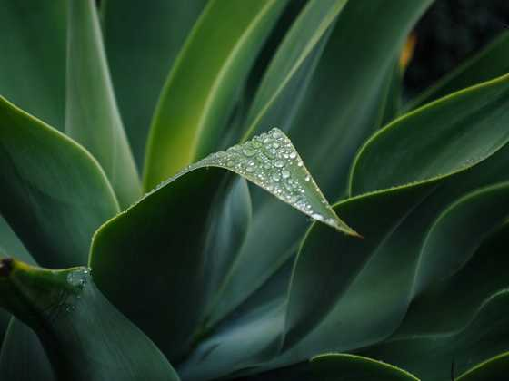

お店のこと
鹿児島市名山町にあるカフェです。屋号は「蜻蛉」で、Instagramのアカウント名は「tonbo」。とんぼを思わせる名前のお店です。
店名の由来やオーナーさんの想いについて、公開されている情報は確認できていません。そのため、このページの「羽を休める止まり木」というコンセプトは、制作側のイメージです。
お店の様子や最新のお知らせは、Instagramでご覧いただけます。





写真はすべてフリー素材のイメージで、お店の実際の様子ではありません。
口コミ
イメージ例
窓の近くの席でぼんやりできて、時間がゆっくり進む気がしました。
イメージ例
ひらがなの店名のとおり、肩の力が抜けるやさしい雰囲気でした。
イメージ例
散歩の途中に寄って、ひと息つけました。また立ち寄りたいです。
口コミは制作側が作成したイメージ例で、実在のお客様の声ではありません。
アクセス
| 住所 | 〒892-0821 鹿児島県鹿児島市名山町3-23 |
|---|---|
| 電話 | 準備中 |
| 営業時間 | 準備中 |
| 定休日 | 準備中 |
| @tonbo.0306 |